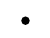
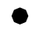
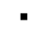
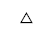
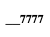

Simbología Inicial de Detecciones
| Tipo de Detección | Símbolo |
| Radar (ver Nota) |
Si 0 < RCS < 10:  SI 10 < RCS < 1000: Si 1000 < RCS:  |
| Visual |  |
| Sonar |  |
| MAD | |
| Infrarrojo |  |
| IFF (Modo 2) |  |
Nota: Se usan tres símbolos distintos, uno pequeño, uno mediano y otro grande para los contactos radar, en función de su RCS. Los valores del RCS para considerar a un contacto como pequeño, mediano o grande se especifican en Galeon.ini. El color de estos símbolos también es configurable en el Galeon.ini.